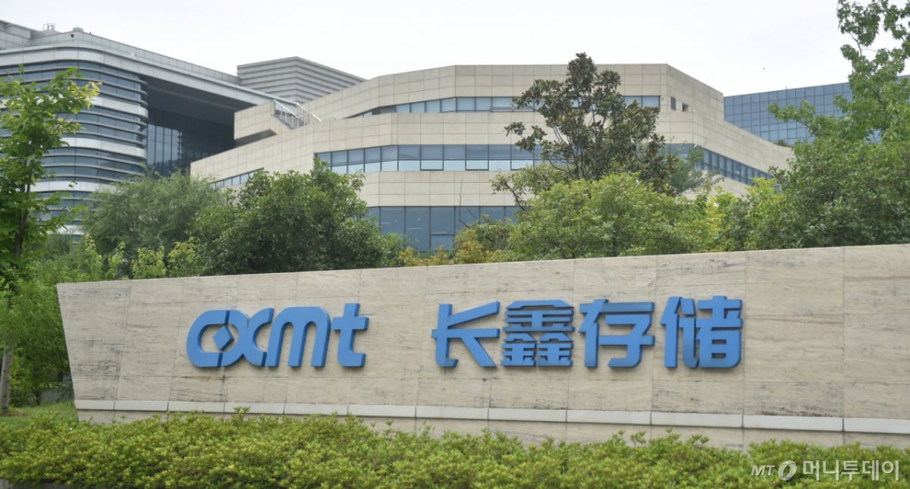

중국의 창신메모리 테크놀로지(CXMT)가 D램 메모리 기술에서 새로운 진전을 이뤘다며 이를 이용해 올해 안에 차세대 서버용 반도체를 선보일 것이라고 밝힌 영향이다.
이날 마이크론 주가는 3.8% 떨어지며 3거래일 연속 하락세를 이어갔다. SK하이닉스 ADR(미국 주식예탁증서)도 4.0% 급락했다. 마이크론과 SK하이닉스, 삼성전자에 전체 포트폴리오의 70~75%를 투자하는 메모리 라운드힐 ETF(DRAM)는 4.3% 내려갔다.
창신메모리의 기술 진전 소식은 플래시 메모리회사의 주가도 끌어내렸다. 이날 샌디스크 주가는 5.9% 급락했고 하드디스크 드라이브 제조업체인 씨게이트와 웨스턴 디지털 주가는 각각 3.8%와 2.6% 하락했다.
https://www.mt.co.kr/amp/world/2026/10/13/2026101308144117710
또 기술 긴빠이 쳤나